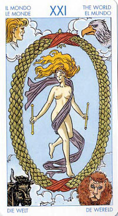

Мир
Смысл карты: в твоей жизни все приобрело свою окончательную, совершенную форму. Ты уверен в своем призвании и делаешь то, что должен. Освободившись от иллюзий, ты принял мир таким, каков он есть, и нашел в нем свое единственное место.
Значение: Это опять-таки одна из самых лучших карт в колоде.
Во-первых, она выпадает людям, достигшим гармонии со своим “Я” и с окружающим миром, нашедшим свое предназначение и выполняющим его с честью. Это не значит, что так будет всегда, но на данном этапе они полностью соответствуют своей космической роли.
Во-вторых, она дает благоприятный ответ практически на любой вопрос, будь то отношения между людьми, бизнес или духовный рост. У тебя все в порядке, говорит она, ты действуешь правильно, продолжай так и дальше, и результат превзойдет твои самые смелые ожидания.
В-третьих, она, подобно джинну из арабских сказок, обещает человеку исполнение его самого главного, самого большого и важного желания (вот тут нужно не ошибиться).
Выпадая в раскладе, эта карта указывает на огромный успех и на чувство реализации и глубокого удовлетворения. Цикл завершен, вы испытываете приятное чувство законченности в сочетании с радостью от достигнутого, вы ощущаете себя "на вершине мира". Наступило время для праздника! На более глубоком уровне она может означать, что завершен определенный этап вашего духовного и личностного развития, либо что вы осознаете, что период исцеления теперь может завершиться.
В области внешней жизни это означает, что мы нашли в ней, наконец, свое место, то самое, которое предназначено нам и только нам.
Еще эта карта может означать международные связи или путешествия.
Завершенный образ человека, с которым он уходит в смерть, есть его совершенство, ради которого он жил в этом мире. Это главный путь воплощения - через судьбу человека. Двадцать первый аркан - завершение и возвращение домой.
Этот Аркан, как никакой другой в колоде Таро, символизирует победу человека над своими слабостями, тянущими его вниз - к земле и грубым материальным благам. Вы перестали быть рабом своих мимолетных желаний и страстей.
Вы больше не гонитесь за теми призраками, которые увлекают многих из вашего окружения; вы наконец-то обрели то внутреннее равновесие, которое позволяет отделять истинные желания от случайных, а также дает возможность в гораздо большей степени, чем прежде, распоряжаться собственной судьбой.
В перевернутом виде (круг, он всегда круглый) она означает то же, разве что с некоторой задержкой во времени.
Для бизнесменов прогноз тоже благоприятен в обоих случаях.
В перевернутом положении карта говорит о том, что время для больших перемен к лучшему еще не настало. Ожидаемые результаты еще за горизонтом, но... не стоит терять Надежды!
Иногда такое положение карты объединяет успех и разочарование (ты мечтаешь занять место своего начальника, добиваешься своего и... понимаешь, что это не так уж и здорово; несколько лет завоевываешь сердце женщины и ровно столько же сожалеешь и раскаиваешься в своем поступке). Но в практическом смысле аркан "Мир" считается благоприятной картой во всех отношениях.